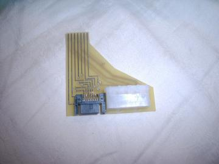

XBOX 360 SERIAL ATA ADAPTER FOR PC
WHAT IS IT?
This is a
small PCB that will allow you to connect your Xbox
360 HD to your PC (via SATA and a simple four pin Molex power
connector) without opening the HDD bay. It will not void the warranty
since you are not taking anything apart, just removing the external HDD
and plugging it in to the adapter. It will have a protective
silkscreen to protect the traces. A PC board will
work great, and allows the product to be cheaper (around $20.00 US).
CONNECTING?
You have to have a sata port on your PC. You can
either have one built onto your motherboard, you can use a sata PCI
card, or you can use a USB-to-Sata converter. For power you just
need a regular four pin
Molex power connector, like you would most likely find plugged into
your internal Cd-Rom or hard drive inside your PC. If you do not have a
free power connector, they make y-splitters so you can add another one
to your system setup. You will need one with some length on it as
you most likely need
to pull it outside your case along with a sata cable to hook to the
360-to-sata adapter to make unhooking and hooking your 360 hard drive
up quick and efficient. If you have enough room in your case like
me? You can set it inside the case and hook it up.
SAMPLE PICTURE:

SATA PLUG (Left) STD POWER CONNECTOR (Right)
http://www.360sata.com/products.php